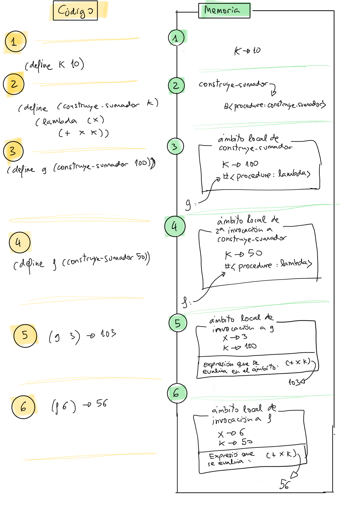

Notas de clase de la semana 4 de LPP.
lambdaLa posibilidad de pasar funciones como parámetros de otras es una poderosa herramienta de abstracción. Veamos un ejemplo.
Supongamos que queremos calcular el sumatorio de a hasta
b. ¿Cómo lo haríamos de forma recursiva?
Solución:
(define (sum-x a b)
(if (> a b)
0
(+ a (sum-x (+ a 1) b))))
(sum-x 1 10) ; ⇒ 55
Supongamos ahora que queremos calcular el sumatorio de a hasta b
sumando los números al cuadrado. ¿Cómo lo haríamos?
Solución:
(define (sum-cuadrado-x a b)
(if (> a b)
0
(+ (* a a) (sum-cuadrado-x (+ a 1) b))))
(sum-cuadrado-x 1 10) ; ⇒ 385
¿Y el sumatorio de a hasta b sumando los cubos?
Solución:
(define (sum-cubo-x a b)
(if (> a b)
0
(+ (* a a a) (sum-cubo-x (+ a 1) b))))
(sum-cubo-x 1 10) ; ⇒ 3025
El código de las tres funciones anteriores es muy similar.
Podemos definir una función genérica sum-f-x que generaliza las
tres funciones anteriores: el sumatorio desde a hasta b de
f(x):
(define (sum-f-x f a b)
(if (> a b)
0
(+ (f a) (sum-f-x f (+ a 1) b))))
Las funciones anteriores son casos particulares de esta función que
las generaliza. Por ejemplo, para calcular el sumatorio desde 1
hasta 10 de x al cubo:
(define (cubo x)
(* x x x))
(sum-f-x cubo 1 10) ; ⇒ 3025
O podemos sumar la expresión (n/(n-1)) para todos los números del 2 al 100. Usamos una expresión lambda:
(sum-f-x (lambda (n) (/ n (- n 1))) 2 100)
sumadorDefinimos una función constructora (construye-sumador k) que crea
en su ejecución una función sumadora:
(define (construye-sumador k)
(lambda (x)
(+ x k)))
La función constructora construye-sumador devuelve un procedimiento:
(construye-sumador 10) ; ⇒ #<procedure>
Por ejemplo, si le pasamos 10, como parámetro devolverá una función de un argumento que sumará 10 a ese argumento:
(define f (construye-sumador 10))
(f 3) ; ⇒ 13
También:
((construye-sumador 10) 3) ; ⇒ 13
Dependiendo del parámetro que le pasemos a la función constructora obtendremos una función sumadora que sume un número u otro. Por ejemplo para obtener una función sumadora que suma 100:
(define g (construye-sumador 100))
(g 3) ; ⇒ 103
¿Cómo funciona la clausura?
(define k 10)
(define (construye-sumador k)
(lambda (x)
(+ x k)))
(define g (construye-sumador 100))
(define f (construye-sumador 50))
(g 3) ; ⇒ 103
(f 6) ; ⇒ 56
Cuando invocamos a construye-sumador con un valor concreto para
k (por ejemplo 100), queda vinculado el valor de 100 al parámetro
k en el ámbito local de la función.
k y su valor
100).Cuando se invoca a la función desde fuera (cuando llamamos a g en
el ejemplo) se ejecuta el cuerpo de la función (+ x k) con x
valiendo el parámetro (3) y el valor de k se obtiene del ámbito
capturado (100).
La siguiente imagen muestra gráficamente cómo se evalúan estas expresiones y qué variables se crean en memoria. Se pueden ver también los distintos ámbitos locales creados en las distintas invocaciones a las funciones.

Para construir una lista de funciones debemos llamar a list con
las funciones como parámetros
(define (doble x) (+ x x))
(define (cuadrado x) (* x x))
(define (suma-1 x) (+ x 1))
(define lista (list cuadrado suma-1 doble))
lista
; ⇒ (#<procedure:cuadrado> #<procedure:suma-1> #<procedure:doble>)
También podemos usar expresiones lambda para crear la función que
se incluye en la lista. Por ejemplo, podemos añadir una función que
suma 5 a un número:
(define lista2 (cons (lambda (x) (+ x 5)) lista))
lista2
; ⇒ (#<procedure> #<procedure:cuadrado> #<procedure:suma-1> #<procedure:doble>)
Debemos tratarlas de la misma forma que tratamos cualquier otro dato
guardado en la lista, las recuperamos con las funciones car o
list-ref y las invocamos.
Por ejemplo, para invocar a la primera función de lista2:
((first lista2) 10) ; ⇒ 15
aplica-funcsVeamos un ejemplo de una función (aplica-funcs lista-funcs x) que
recibe una lista de funciones en el parámetro lista-funcs y las
aplica todas de derecha a izquierda al número que pasamos en el
parámetro x.
Por ejemplo, la lista anterior con las funciones cuadrado, cubo
y suma-1:
(define lista (list cuadrado cubo suma-1))
la llamada a (aplica-funcs lista 5) devolverá :
(cuadrado (cubo (suma-1 5)) ; ⇒ 46656
Implementación:
(define (aplica-funcs lista-funcs x)
(if (null? lista-funcs)
x
((first lista-funcs)
(aplica-funcs (rest lista-funcs) x))))
Un ejemplo de uso:
(define lista-funcs (list (lambda (x) (* x x))
(lambda (x) (* x x x))
(lambda (x) (+ x 1))))
(aplica-funcs lista-funcs 5)
⇒ 46656
Definición
Las funciones de orden superior (higher order functions en inglés) son funciones que reciben como parámetro otras funciones.
Llamamos funciones de orden superior (higher order functions en inglés) a las funciones que toman otras como parámetro o devuelven otra función. Permiten generalizar soluciones con un alto grado de abstracción.
Los lenguajes de programación funcional como Scheme, Scala o Java 8 tienen ya predefinidas algunas funciones de orden superior que permiten tratar listas o streams de una forma muy concisa y compacta.
Si alguna función no existe en el lenguaje, es posible implementarlas nosotros mismos
Veremos:
mapfilterexists? (implementada por nosotros)for-all? (implementada por nosotros)foldr y foldlDe alguna de las funciones veremos también su implementación recursiva.
Terminaremos viendo cómo la utilización de funciones de orden superior es una excelente herramienta de la programación funcional que permite hacer código muy conciso y expresivo.
mapLa función map recibe otra función y una
lista. Devuelve la lista resultante de aplicar la función
transforma a todos los elementos de la lista.
(map transforma lista) -> lista
La función (transforma dato) que usa map recibe como argumento
elementos de la lista y devuelve el resultado de transformar ese
elemento.
(transforma elemento) -> elemento
Ejemplos:
(map cuadrado '(1 2 3 4 5))
; ⇒ (1 4 9 16 25)
(map (lambda (str) (string-append "Hola-" str)) '("me" "llamo" "Ana"))
; ⇒ ("Hola-me" "Hola-llamo" "Hola-Ana")
(map (lambda (s)
(string-length (symbol->string s))) '(Esta es una lista de símbolos))
; ⇒ (4 2 3 5 2 8)
Veamos cómo se implementa map de forma recursiva. Llamamos a la
función mi-map.
(define (mi-map f lista)
(if (null? lista)
'()
(cons (f (first lista))
(mi-map f (rest lista)))))
La función map puede recibir un número variable de listas, todas
ellas de la misma longitud:
(map transforma lista_1 ... lista_n) -> lista
En este caso la función de transforma debe recibir tantos argumentos
como listas recibe map:
(transforma dato_1 ... dato_n) -> dato
La función map aplica transforma a los elementos cogidos de las
n listas y construye así la lista resultante:
(map + '(1 2 3) '(10 20 30)) ; ⇒ (11 22 33)
(map cons '(1 2 3) '(10 20 30)) ; ⇒ ((1 . 10) (2 . 20) (3 . 30))
(map > '(12 3 40) '(20 0 10)) ; ⇒ (#f #t #t)
(define (mayor a b) (if (> a b) a b))
(define (mayor-de-tres a b c)
(mayor a (mayor b c)))
(map mayor-de-tres '(10 2 20 -1 34)
'(2 3 12 89 0)
'(100 -10 23 45 8))
; ⇒ (100 3 23 89 34)
Consejo
La función map recibe una o más listas de n elementos y devuelve otra
de n elementos transformados.
filter(filter predicado lista) toma como parámetro un
predicado y una lista y devuelve como resultado los elementos de la
lista que cumplen el predicado.(filter predicado lista) -> lista
La función (predicado elem) que usa filter recibe elementos de
la lista y devuelve #t o #f.
(predicado elem) -> boolean
Ejemplos:
(filter even? '(1 2 3 4 5 6 7 8))
; ⇒ (2 4 6 8)
(filter (lambda (s)
(>= (string-length (symbol->string s)) 4))
'(Esta es una lista de símbolos))
; ⇒ (Esta lista símbolos)
(filter (lambda (pareja)
(>= (car pareja) (cdr pareja)))
'((10 . 4) (2 . 4) (8 . 8) (10 . 20)))
; ⇒ ((10 . 4) (8 . 8))
Podemos implementar filter de forma recursiva. Llamamos a la
función mi-filter.
(define (mi-filter pred lista)
(cond
((null? lista) '())
((pred (first lista)) (cons (first lista)
(mi-filter pred (rest lista))))
(else (mi-filter pred (rest lista)))))
Consejo
La función filter recibe una lista de n
elementos y una condición y devuelve otra de de n o menos
elementos originales filtrados por la condición.
exists? (implementada por nosotros)La función de orden superior (exists? predicado lista) recibe un
predicado y una lista y comprueba si algún elemento de la lista
cumple ese predicado.
(exists? predicado lista) -> boolean
Igual que en filter el predicado recibe elementos de la lista y
devuelve #t o #f.
(predicado elem) -> boolean
Implementación:
(define (exists? predicado lista)
(if (null? lista)
#f
(or (predicado (first lista))
(exists? predicado (rest lista)))))
Ejemplos:
(exists? even? '(1 2 3 4 5 6)) ; ⇒ #t
(exists? (lambda (x)
(> x 10)) '(1 3 5 8)) ; ⇒ #f
for-all? (implementada por nosotros)La función de orden superior (for-all? predicado lista) recibe un
predicado y una lista y comprueba que todos los elementos de la
lista cumplen ese predicado.
Implementación:
(define (for-all? predicado lista)
(or (null? lista)
(and (predicado (first lista))
(for-all? predicado (rest lista)))))
Ejemplos:
(for-all? even? '(2 4 6)) ; ⇒ #t
(for-all? (lambda (x)
(> x 10)) '(12 30 50 80)) ; ⇒ #t
foldrEl nombre fold significa plegado. La función foldr
recorre una lista y la va "plegando", devolviendo un único valor
como resultado.
(foldr combina base lista) -> valor
El plegado lo realiza la función de plegado (combina dato
resultado), que recibe un dato de la lista y lo acumula con el otro
parámetro resultado (al que debemos dar un valor inicial y es el
parámetro base de la función foldr).
(combina dato resultado) -> resultado
La función combina se aplica a los elementos de la lista de
derecha a izquierda, empezando por el último elemento de la lista
y el valor inicial base y aplicándose sucesivamente a los
resultados que se van obteniendo.
Veamos un ejemplo. Supongamos que la función de plegado es una función que suma el dato que viene de la lista con el valor acumulado:
(define (suma dato resultado)
(+ dato resultado))
Llamamos a los parámetros dato y resultado para remarcar que el
primer parámetro se va a coger de la lista y el segundo del
resultado calculado.
Veamos qué pasa cuando hacemos un foldr con esta función
suma y la lista (1 2 3) y con el número 0 como base:
(foldr suma 0 '(1 2 3)) ; ⇒ 6
La función suma se va a ir aplicando a todos los elementos de la
lista de derecha a izquierda, empezando por el valor base (0) y
el último elemento de la lista (3) y cogiendo el resultado obtenido
y utilizándolo como nuevo parámetro resultado en la siguiente
llamada.
En concreto, la secuencia de llamadas a la función suma serán las
siguientes:
(suma 3 0) ; ⇒ 3
(suma 2 3) ; ⇒ 5
(suma 1 5) ; ⇒ 6
Otro ejemplo de uso:
(foldr string-append "****" '("hola" "que" "tal"))
; ⇒ "holaquetal****"
En este caso la secuencia de llamadas a string-append que se van a
producir son:
(string-append "tal" "****") ; ⇒ "tal****"
(string-append "que" "tal****") ; ⇒ "quetal****"
(string-append "hola" "quetal****") ; ⇒ "holaquetal****"
Otros ejemplos:
(foldr (lambda (x y) (* x y)) 1 '(1 2 3 4 5 6 7 8)) ; ⇒ 40320
(foldr cons '() '(1 2 3 4)) ; ⇒ (1 2 3 4)
La implementación recursiva en Scheme de la función foldr es
la siguiente:
(define (mi-foldr combina base lista)
(if (null? lista)
base
(combina (first lista) (mi-foldr combina base (rest lista)))))
foldlLa función (foldl combina base lista) (fold left) es similar a
foldr con la diferencia de que la secuencia de aplicaciones de la
función de plegado se hace de izquierda a derecha en lugar de
derecha a izquierda.
El perfil de la función de plegado es el mismo que en foldr:
(combina dato resultado) -> resultado
Por ejemplo, si la función de combinación es string-append:
(foldl string-append "****" '("hola" "que" "tal"))
; ⇒ "talquehola****"
La secuencia de llamadas a string-append es:
(string-append "hola" "****") ; ⇒ "hola****"
(string-append "que" "hola****") ; ⇒ "quehola****"
(string-append "tal" "quehola****") ; ⇒ "talquehola****"
Otro ejemplo:
(foldl cons '() '(1 2 3 4)) ; ⇒ (4 3 2 1)
La implementación de foldl la veremos cuando hablemos de
recursión por la cola (tail recursion) en el próximo tema.
Consejo
Las funciones foldr o foldl reciben una lista de
datos y devuelven un único resultado
Veamos por último unos ejemplos en los que definimos funciones que iteran sobre listas usando funciones de orden superior (FOS) y expresiones lambda.
La iteración no se realizará mediante recursividad, sino que serán las FOS las que la implementen.
Combinación de funciones de orden superior
La combinación de funciones de orden superior y expresiones lamba para definir funciones iterativas sobre listas es una de las características más potentes de la programación funcional.
(suma-n n lista)Supongamos que queremos definir una función (suma-n n lista) que
devuelve la lista resultante el resultado de sumar un número n a
todos los elementos de una lista.
Podemos hacerlo de forma recursiva:
(define (suma-n n lista)
(if (null? lista)
'()
(cons (+ (first lista) n)
(suma-n n (rest lista)))))
Funciona de la siguiente manera:
(suma-n 10 '(1 2 3 4))
; ⇒ (11 12 13 14)
¿Podemos implementar suma-n usando una llamada a map?
Sí, pasándole a map una función construida con una expresión lambda
en la que se usa el parámetro n:
(define (suma-n n lista)
(map (lambda (x) (+ x n)) lista))
Otro ejemplo: Función suma-parejas
(define (suma-parejas lista-parejas)
(foldr (lambda (pareja resultado)
(+ (car pareja) (cdr pareja) resultado)) 0 lista-parejas))
(suma-parejas (list (cons 3 6) (cons 2 9) (cons -1 8) (cons 9 3))) ; ⇒ 39
En la composición de funciones de orden superior, la lista resultante de la salida de una función se utiliza como entrada de la siguiente.
Supongamos que queremos implementar una función que sume un número
n a todos los elementos de una lista (igual que la anterior) y
después que sume todos los elementos resultantes.
¿Cómo lo haríamos? (podemos reutilizar el código del ejemplo anterior)
Solución:
(define (suma-n-total n lista)
(foldr + 0
(map (lambda (x) (+ x n)) lista)))
(suma-n-total 100 '(1 2 3 4)) ; ⇒ 410
Otro ejemplo: queremos contar aquellas parejas cuya suma de ambos números es mayor que un umbral (por ejemplo, 10).
(define lista-parejas (list (cons 1 2)
(cons 3 8)
(cons 2 3)
(cons 9 6)))
(cuenta-mayores-que 10 lista-parejas) ; ⇒ 2
¿Cómo se implementaría componiendo funciones de orden superior?:
Solución:
(define (cuenta-mayores-que n lista-parejas)
(length
(filter (lambda (x)
(> x n)) (map (lambda (pareja)
(+ (car pareja) (cdr pareja))) lista-parejas))))
(contienen-letra caracter lista-pal)Queremos definir la función (contienen-letra
caracter lista-pal) que devuelve las palabras de una lista que
contienen un determinado carácter, usando la función filter y
alguna función auxiliar
Por ejemplo:
(contienen-letra #\a '("En" "un" "lugar" "de" "la" "Mancha"))
; ⇒ ("lugar" "la" "Mancha")
Necesitamos el predicado auxiliar (letra-en-pal? caracter pal) que
comprueba si una cadena contiene un carácter. Por ejemplo:
(letra-en-pal? #\a "Hola") ; ⇒ #t
(letra-en-pal? #\a "Pepe") ; ⇒ #f
¿Lo podemos implementar obteniendo una lista de caracteres a partir
de la cadena y usando la función exists??
Solución:
(define (letra-en-pal? caracter palabra)
(exists? (lambda (c)
(equal? c caracter)) (string->list palabra)))
Ahora ya podemos implementar contienen-letra usando otra vez la
función de orden superior filter y la función anterior en la
expresión lambda que hace el filtrado:
(define (contienen-letra caracter lista-pal)
(filter (lambda (pal)
(letra-en-pal? caracter pal)) lista-pal))